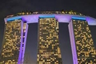

Multimedia
Pequena em tamanho, a "Lion City" oferece grandes encantos, e construções incriveis.
Video Fotografias Poema
Video
Fotografias



Poema
Título: SingaporeAutor: Valéria Cheshire Éméline
“An elegant orchid in full bloom,
A nation of harmony, peace and justice...
Singapore ??? They ask.
What race are those people ?
As they guess and ponder...
Different ethnic foods hold the answers.”